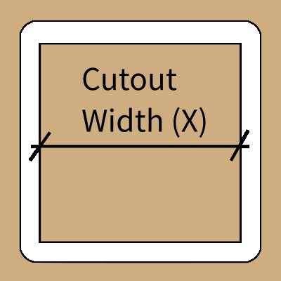
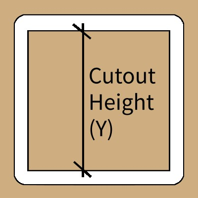

GRBL Square Cutout G-Code Generator
Generates G-Code for a rectangular cutout. The tool center is offset outside the defined boundary.

3D Toolpath Preview
The path will appear once you press the generate button.
Order of operations:
- Zero the machine at the cutout corner.
- Tool will lift up and travel to the outside perimeter start.
- Tool will plunge and cut the perimeter in multiple Z passes.
- Once finished, it will lift up and travel to start position at safe height.
Input Parameters
|  | Cutout Width (X) defines the desired size of the part along the X-axis. The tool will cut *outside* this line. |
|  | Cutout Height (Y) defines the desired size of the part along the Y-axis. The tool center will trace the perimeter plus the tool radius. |
 |
Total Depth (Z) is the final, negative Z-coordinate the tool will reach. This should typically be slightly more than the material thickness. |
 |
Tool Diameter is the width of the end mill used for cutting. The offset calculation depends on this value. |
 |
Stepdown (Z) is the maximum depth the tool will cut in a single pass before starting the next layer. |
 |
Feed Rate (XY) is the speed at which the tool moves horizontally during cutting operations (G1 moves). |
 |
Plunge Rate (Z) is the speed at which the tool moves vertically (down) when entering the material (G1 Z moves). |
 |
Safety Z Height is a clear height above the material that the tool uses when moving between non-cutting operations. |
-
Raw G-Code Preview expand_more